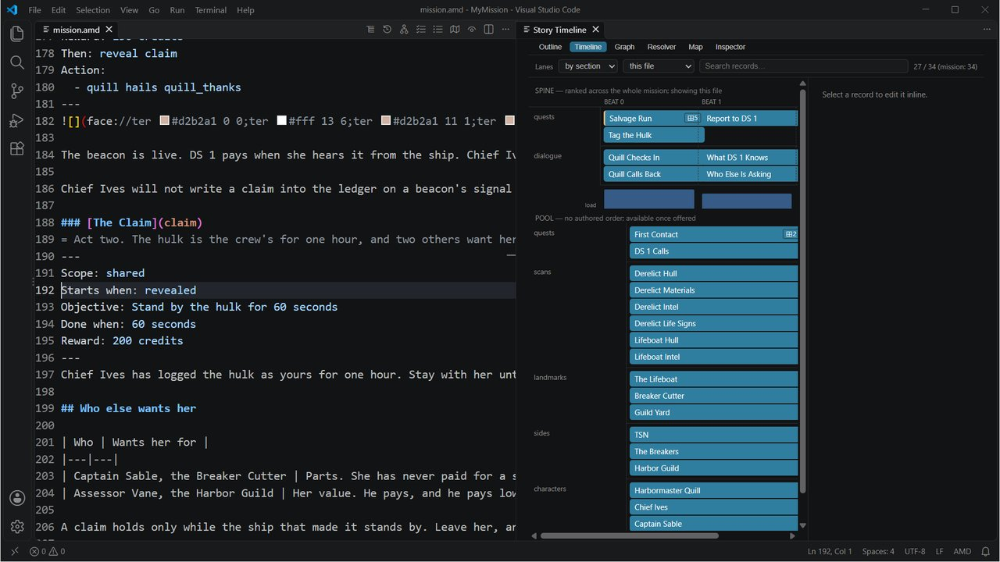

Class 2, Lecture 7 - The story tools¶
What you will have at the end¶
A second act for your mission, planned before it was written. And four ways to see the whole story at once without scrolling a file: a list, a timeline, a diagram, and a to-do list the tool writes for you. Then the story printed as four documents.

VS Code:mission.amd on the left, the Story Timeline beside it.
You will add three records to mission.amd, and a one-line note to five. Nothing in
story.mast changes.
The video¶
About 7 minutes. Subtitles are available in the player.
Before you start¶
- Your mission as Lecture 5 left it. It still has the Salvage Run from Class 1. Beside
it, the crew tags the hulk for DS 1, and that job pays when Comms tells Quill and Chief
Ives that the beacon is set. Lecture 6 was done in a copy of the folder,
MyStanding. Leave that copy as it is, and come back toMyMissionfor this lecture. sbs lint MyMissionsaysclean.- VS Code with the mission folder open and trusted, a command prompt open in
data\missions, and the game closed.
In this page the mission folder is called MyMission. Use your own folder's name.
Line numbers on this page are for a mission.amd that matches Lecture 5's finished file
line for line. If yours has more in it, go by the words.
Words for this lecture:
| Word | Meaning |
|---|---|
| Note | A line that starts with = and a space, under a heading. It says what the record is for. Only you read it |
| Link | A key in two pairs of square brackets, in a sentence: [[vane]]. The game prints that record's name |
| Pointer | Any place where one record names another: a Then: reveal, an answer that leads to a scene, a link |
| Missing | Named by a pointer and not written yet |
| Beat | A column on the timeline. Beat 2 holds what cannot happen until something in beat 1 has |
Step 1 - Why you need more than a file¶
Your mission.amd holds thirty-one records now: twelve quests, six readings, three
places, three sides, three people and four scenes. Twelve pointers run between them. Five
are Then: reveal lines. Four are Part of: lines. Three are answers that lead to
another scene.
You can no longer hold all of that in your head, and it will only grow. The tools in this lecture read the same file you type and show it back to you in other shapes.
Ask the first of them a question now. In the command prompt:
Every pointer in your file lands on a record that exists. Keep that line in mind. In Step 4 you break it on purpose.
Step 2 - Say what each record is for¶
A quest's description is written for the crew. It says what to do. It does not say why the story needs that step. A note does.
A note is a line that starts with = and a space. It goes directly under the heading,
above the fence. Add one to each of these four records:
#### [Close Inspection](approach)
= The crew sees the hulk up close. DS 1 sees them do it, and that starts the talking.
---
### [DS 1 Calls](ds1_calls)
= The offer. Quill needs a beacon on the hulk and has nobody else to send.
---
### [Report to DS 1](report_in)
= End of act one. The crew has done DS 1 a favor, and now DS 1 owes them the truth.
---
Save, and run sbs lint MyMission. It says clean.
Where a note is shown, and where it is not:
| Place | Shown |
|---|---|
| The game: the Quest Log, a call, a reading | No. The crew never sees a note |
VS Code: hold the mouse over a key in a pointer, such as report_in in Then: reveal report_in |
Yes. A small box shows the record's name, then its note, then its first line |
| The printed story book (Step 8) | Yes, beside the record |
| The printed script and the printed bible (Step 8) | No |
The space matters.
=The mystery.with no space after the=is not a note. Lint saysclean, and in the game First Contact is no longer listed as an arc. Step 9 has the row.
Step 3 - Four views of the same file¶
Click anywhere in mission.amd. Look at the top right corner of the editor, on the same
row as the file's tab. The AMD add-on puts a row of small icons there. The first three are
the story views, in this order:
| Icon's name | Opens a tab named | What it is |
|---|---|---|
| Show Story Outline | Story Outline | A list of every record, grouped by section, with a box to search in. Click a record and a pane shows its fields, what it leads to, and what it is reached from |
| Show Story Timeline | Story Timeline | Columns of beats, left to right, with rows called lanes. What comes first, and what waits for it |
| Show Story Graph | AMD Story Graph | Boxes and arrows. One box for each record, one arrow for each pointer |
If you cannot find an icon, press Ctrl+Shift+P, type Artemis AMD, and choose the
name from the list.
Each view opens beside your file. Each one redraws while you type. Clicking a record in a view moves your cursor to that record in the file.
What your file gives each view today:
| View | Your mission |
|---|---|
| Story Outline | Thirty-one records in six groups: Quests 12, Scans 6, Landmarks 3, Sides 3, Characters 3, Dialogue 4 |
| Story Timeline | Five beats. The lanes can be drawn four ways: by section, by arc, by side, by console |
| AMD Story Graph | Twelve arrows: five marked reveal, four marked parent, three marked choice |
Open the timeline and read it left to right. Find the Derelict is in beat 1 and Study the Derelict in beat 2, because one reveals the other. Salvage Run is in beat 1 and its first step, Close Inspection, in beat 2. Then come Find the Lifeboat, Wait for the Tug and Bring the Log Home, in beats 3, 4 and 5: each is revealed by the one before. That is your Class 1 chain, drawn.
The timeline does not know everything. It builds its beats from the pointers it
follows: a Then: reveal, an answer that leads to a scene, Part of:, and a signal. It
does not follow two things you learned in this class:
| Your file says | The timeline shows | Why |
|---|---|---|
DS 1 Calls places the call Quill Checks In, with Action:, when the ship is close to the hulk |
Quill Checks In in beat 1, beside the start of the story | A call placed by Action: is not counted as a pointer |
| Tag the Hulk starts only when the crew answers "We will tag her." | Tag the Hulk in beat 1 | What an answer does after its ; is not counted |
So read the timeline for the chain of your quests. For who calls whom, and what an answer starts, read the printed script in Step 8.
Step 4 - Plan act two by pointing at it¶
The salvage job ends when the crew reports to DS 1. Here is what comes after, in three sentences. The hulk is worth something. Chief Ives logs her as the crew's for one hour. The Harbor Guild has an assessor named Vane, and he wants to know what she is worth.
Do not write those records yet. Point at them. Make three small changes.
1. A step that reveals the next act. In the fence of Report to DS 1, add a
Then: line above Action::
2. A name in a sentence. In the description of the same record, add a sentence with a link in it, at the end of its first paragraph:
 Chief Ives, salvage desk, DS 1
The beacon is live. DS 1 pays when she hears it from the ship. Chief Ives says [[vane]] has been asking what she is worth.
Chief Ives will not write a claim into the ledger on a beacon's signal alone. Somebody aboard the ship that set it has to say so on Comms, so that it is on the record.
Two square brackets, a key, two square brackets. When the record vane exists, the game
prints its name there. Keep the link itself whole, on one line. The sentence around it can
run on to the next line of the file: the Quest Log joins the lines of a paragraph. The
crew reads this sentence in the Quest Log, on Helm's handheld, on Report to DS 1's page.
3. An answer that leads on. In the scene Quill Calls Back, add a second answer under the first:
- [It is ours, DS 1. The beacon is set.]() ; completes report_in
- [Who else is asking about her?](quill_rivals)
The crew sees this answer on Comms, in Quill's second call, after Chief Ives has spoken.
Save. You have named three things that do not exist: a quest claim, a person vane,
and a scene quill_rivals.
Step 5 - Read your to-do list¶
3 thing(s) referenced but not written yet:
claim
revealed by `report_in` mission.amd:178
quill_rivals
chosen from `quill_thanks` mission.amd:378
vane
linked from `report_in` mission.amd:184
That is your writing list for act two. Each entry names what is missing, which record points at it, and the line.
The fourth icon in VS Code shows the same list. Its name is Show Missing, and its tab
is named AMD Missing. Its first line reads 3 thing(s) referenced but not written
yet (3 reference(s) across 1 file(s)). Click a row and the cursor goes to that line.
Plain lint sees the same three things, as warnings:
== mission.amd ==
[WARNING] line 178:14: `report_in` Then reveals `claim`, and no record has that key, so nothing is revealed (dangling-reveal)
[WARNING] line 184:80: `report_in` links to `vane`, which is not written yet (dangling-link)
[WARNING] line 378:35: choice in `quill_thanks` points at `quill_rivals`, which resolves to no node (dangling-choice)
1 amd + 1 mast file(s): 0 error(s), 3 warning(s)
| Command | Use it when |
|---|---|
sbs lint MyMission |
You think you are finished. A warning is something to fix |
sbs lint MyMission --missing |
You are in the middle. The list is what to write next |
Do not play the mission in this state. A story with something missing can stop. Step 9 says how.
Step 6 - Write them, one at a time¶
The quest. Type this under Report to DS 1, with one blank line above it:
### [The Claim](claim)
= Act two. The hulk is the crew's for one hour, and two others want her.
---
Scope: shared
Starts when: revealed
Objective: Stand by the hulk for 60 seconds
Done when: 60 seconds
Reward: 200 credits
---
Chief Ives has logged the hulk as yours for one hour. Stay with her until the ledger closes.
## Who else wants her
| Who | Wants her for |
|---|---|
| Captain Sable, the Breaker Cutter | Parts. She has never paid for a ship |
| Assessor Vane, the Harbor Guild | Her value. He pays, and he pays low |
A claim holds only while the ship that made it stands by. Leave her, and the first hull alongside can take her.
This is the start of act two, and the crew reads it at the moment the story turns, in the Quest Log on Helm's handheld, so give it a page: the order, a heading, a short table of who else is in play, and what is at stake. Every part of it is from Class 1, Lecture 8. The table names people in plain words; the crew meets Sable and Vane by voice later in the act.
Save, and ask again:
2 thing(s) referenced but not written yet:
quill_rivals
chosen from `quill_thanks` mission.amd:398
vane
linked from `report_in` mission.amd:184
The person. In the Characters section, under Captain Sable:
### [Assessor Vane](vane)
---
Face: ter #d2b2a1 0 0;ter #fff 13 6;ter #d2b2a1 11 1;ter #d2b2a1 12 2;ter #934e2c 11 3;
---
Values wrecks for the Harbor Guild. Buys what the Breakers would only steal.
That Face: line is a quick one. Make him a face of his own in the Face Builder, as in
Lecture 2, when you have a minute.
The scene. At the very end of the file, with one blank line above it:
### [Who Else Is Asking](quill_rivals)
---
Speaker: quill
---
% Two of them. Captain Sable, who never pays, and the Guild's assessor, who always does.
% The Breakers want her for parts. And the Guild's assessor has called me twice today.
- [Then log the claim, DS 1. The beacon is set.]() ; completes report_in
The new scene has one answer, and that answer finishes Report to DS 1. Every road through a call has to reach an answer that finishes the step, or the step stays open.
Your mission now holds thirty-four records and fourteen pointers. The timeline has The Claim in beat 3, after Report to DS 1.
Step 7 - Cut a scene without losing it¶
You cut scenes more often than you cut sentences, and you want them back next week. Put
/* on a line by itself above a record, and */ on a line by itself below its last
line:
/*
### [What DS 1 Knows](quill_history)
---
Speaker: quill
---
% She came through the gate eleven days ago with her transponder off. Nobody has claimed her.
% No flight plan, no transponder, no crew list. She arrived, and she stopped.
- [She is cold, DS 1. No power, no lights.](quill_offer)
- [Thank you, DS 1. Artemis out.]()
*/
Everything between the marks is out of the mission and still in your file. Now ask who pointed at it:
One answer in Quill Checks In still leads to the scene you cut. If the crew chooses it, the call ends there. Then nothing has finished DS 1 Calls, and the job is never offered.
So a cut has two halves: the record, and every pointer at it. The list tells you the second half.
Take both marks out again. The scene is back. Run sbs lint MyMission: clean.
Step 8 - Print the story¶
In Class 1 you printed one document for a friend. With people and calls in the story, print all four kinds and read each for a different thing.
prose 1 files -> ...\data\missions\MyMission\__docs__\My Mission-prose.html
catalog 1 files -> ...\data\missions\MyMission\__docs__\My Mission-catalog.html
screenplay 1 files -> ...\data\missions\MyMission\__docs__\My Mission-screenplay.html
bible 1 files -> ...\data\missions\MyMission\__docs__\My Mission-bible.html
Four web pages, in a folder named __docs__ inside your mission. Double-click one to
read it. Add --pdf to the command, as you did in Class 1, to get a PDF of each.
| Document | Read it for | What is in it |
|---|---|---|
prose |
The story as a book | Every record in the order you wrote it, with your notes beside them |
screenplay |
The dialogue, aloud | Every scene: who speaks, each line, each answer, what the answer does, and where it leads. The readings from your scans are in it too |
catalog |
Looking something up | Every record that has a fence, grouped by kind: 3 sides, 4 people, 3 places, 6 readings, 13 quests, 5 scenes |
bible |
The chain | The same beats as the timeline, and under each record reached from and leads to |
The top of the bible counts your story. For the finished file it reads: 1 file, 34 records, 5 beats, 14 causal edges. An edge is a pointer.
Five things to know before you trust a page:
- Takes are printed one under another. A block of three
%lines is printed as three lines. Quill says one of them, not all three. - Some field names are not the ones you typed. The catalog and the bible print
Goalwhere you typedDone when:,Whenwhere you typedStarts when:, andScan_Ofwhere you typedScan of:. - The script labels a call that comes in
INT. COMMS - OUTGOING. It is the same call. Read the scene's name, not the label. - The bible's beats have the two gaps the timeline has. It puts Tag the Hulk in beat 1.
- A link in a note is not followed.
[[vane]]typed in a=line is printed with its brackets, and nothing checks it. Put links in sentences below the fence.
For a friend who will read your story and not play it, add --profile player. The script
then prints each answer's words, and leaves out what the answer does and where it leads.
The bible cannot be printed that way: it is the whole plot.
Step 9 - Check it¶
Each mistake below was made on purpose, one at a time, in the finished file. The word in the last column is at the end of the line lint prints.
Lint tells you.
| Mistake | What the game does | Lint says |
|---|---|---|
A link to a key that is misspelled, [[vain]] |
The crew reads the word vain |
dangling-link |
| A link to a record you have not written yet | The crew reads the bare key | dangling-link |
The new answer leads to quill_rival, with the s left off |
If the crew chooses it, the call ends. Report to DS 1 is never finished, and act two never starts | dangling-choice |
| The scene cut in Step 7, with the answer that leads to it left in | If the crew chooses that answer, the call ends. DS 1 Calls is never finished, and the job is never offered | dangling-choice |
Speaker: vance, somebody not in the cast |
The line is said by vance, with no face |
dangling-speaker |
@ivess for @ives |
The line is said by ivess, with no face |
dangling-speaker |
A /* with no */ after it |
Every record below the mark is gone from the mission | An error: fence-syntax. It says the /* was never closed |
| A note typed inside the fence | The mission still plays | Two errors: fence-syntax |
What lint cannot see. Lint says clean for every row here.
| Mistake | What the game does |
|---|---|
=The mystery. with no space after the =, under the heading of First Contact |
First Contact is not listed as an arc. Its step Find the Derelict is listed alone |
Then: reveal quests/claim, with the section's key in front |
The Claim never appears. mast.runtime.log has a line about it |
A link with one pair of brackets, [vane] |
The crew reads [vane], brackets and all |
/* and */ in the middle of a line |
The crew reads the marks. A cut is whole lines |
| A link in a note to a record that does not exist | Nothing. A note is never checked |
Two things lint and --missing say differently:
| You wrote | sbs lint |
sbs lint --missing |
|---|---|---|
Speaker: vance, somebody not in the cast |
Warns | Does not list vance. An @vance line is listed |
[[Assessor Vane]], the name where the key goes |
Warns, dangling-link |
Lists it as missing. The game prints the name all the same |
A note typed under the fence, in the description, is still a note: the crew does not see it. Keep notes under the heading anyway, where you will look for them.
Step 10 - Play it¶
- Fly inside 500 of the hulk. Quill calls. On Comms, tell her the hulk is cold, then that you will tag her.
- Wait 30 seconds. Report to DS 1 is in the Quest Log. The first paragraph of
its description now ends
Chief Ives says Assessor Vane has been asking what she is worth., and the paragraph about the ledger still follows it. The link is printed as his name, in plain type. - Answer the second call. When Chief Ives has spoken there are two answers. Choose
Who else is asking about her? - Quill answers. Choose
Then log the claim, DS 1. The beacon is set. - Report to DS 1 is done and pays 150. The Claim is in the Quest Log.
- A little over a minute later The Claim is done and pays 200.
For this much the crew's side has been paid 450 credits: 100 for the close pass, 150 for the report, 200 for the claim. It is 500 if they were quick enough for the Quick Work bonus. The Salvage Run from Class 1 is still running beside all of it, with its own clock and its own ending.
Your notes are nowhere on any console.
If something goes wrong¶
| What you see | Likely cause |
|---|---|
| No row of icons at the top right of the editor | The file is not open, or the folder is not trusted. Look for AMD: trust this folder at the right of the Status Bar, as in Class 1, Lecture 3 |
| A view says the language server is not running, or is still starting | Wait a few seconds and choose the view again. If it stays, close VS Code and open the folder again |
| A call ends as soon as an answer is chosen, and the story stops | That answer leads to a scene that is not there. Run sbs lint MyMission --missing |
The crew reads a key such as vane in a sentence |
The link points at a record you have not written, or its key is misspelled |
| The Claim never appears | Then: reveal does not say claim exactly, or the report call has not been answered yet |
| An arc is missing from the Quest Log | A note under its heading has no space after the = |
| Half the file's records are gone from the game | A /* with no */. Run lint |
The printed title is MyMission, one word |
--title "..." was left off the command |
Exercise¶
On your own mission.
- Give every quest and every scene a note. One sentence each: what is it for?
- Open the Story Timeline. Find a record that sits in an earlier beat than it should.
Is it placed by an
Action:line or started by an answer? Then the timeline cannot know. - Plan one more step of your own by pointing at it: one
Then: reveal, one answer that leads to a new scene, one link in a sentence. Runsbs lint MyMission --missingand read your list. - Write the three records. Run the command after each, and watch the list shrink.
- Print all four documents. Read the script aloud, one take from each block.
Break it on purpose. Cut the scene The Offer with /* and */. Run
sbs lint MyMission --missing. Two answers lead to it. Take the marks out again.
Checkpoint¶
You are done when all five are true:
sbs lint MyMissionshowsmission.amdasclean, andsbs lint MyMission --missingsaysNothing missing.- Five records in your file have a note.
- You have opened the Story Outline, the Story Timeline and the Story Graph, and found The Claim in each.
- In a game, the new answer leads to Quill's new scene, and The Claim appears when the report is done.
- The
__docs__folder in your mission holds four pages, and you have read your own dialogue in the script.
Next¶
Lecture 8 leaves MyMission for a while. You write a boss for the Siege game: one file,
in a folder of your own.
Further reading¶
- "AMD authoring tools" in the library documentation: every view the add-on has, including three this lecture did not open: the Resolver, the Mission Map and the Mission Inspector. It says a note shows in the Story Outline and on the Timeline. In the add-on this course uses, it shows when you hold the mouse over a pointer.
- "Printing a mission:
sbs docs" in the library documentation: the four documents and every option. - "The AMD file format", the parts called "A note to yourself", "Cut, not deleted" and "Linking from inside prose".
Download this lecture's finished files (a zip of its example folder).